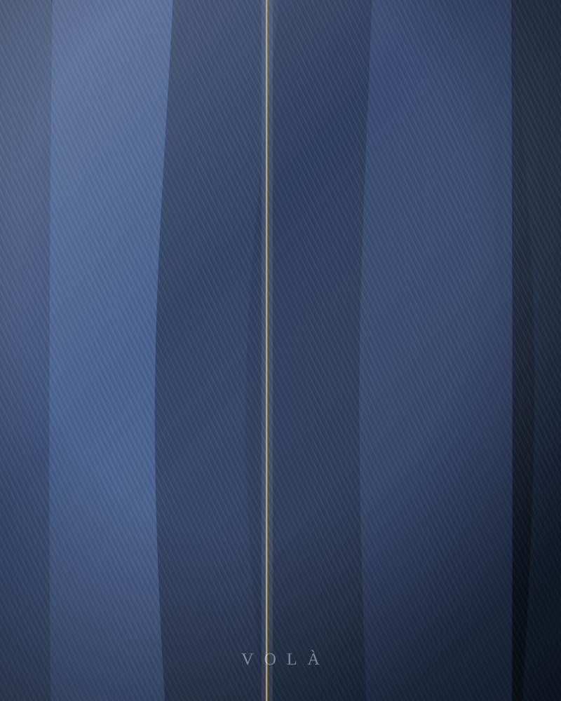

The Atelier
Via dei Fossi 14, Florence. Eleven people, five mills, and a rule about doing it once, properly.

Since 2016
Denim, treated as
couture cloth
VOLÀ began with a disagreement. Denim, we were told, is workwear — you cut it flat, you sew it fast, you sell it cheap. We thought a fabric that takes a year to fade properly deserved the same hands that shape silk and wool.
So we draped it. Every VOLÀ pattern begins on the stand in three dimensions, wet-set and rested before it is ever flattened into paper. It is slower by an order of magnitude, and it is the whole reason a Sculpt jean holds its line and a Monolith dress falls instead of hanging.
Where the cloth comes from
Five mills, no more
Albini — Bergamo
Cotton chambray and light shirting weights. The Atelier shirt, and the panelling on the Ecru dress.
Berto — Veneto
Coated and resin-finished denim. The Noir line, the Obi belt, the Vertige heel.
Kaihara — Hiroshima
Rope-dyed selvedge, 13.5 to 14oz. The backbone of the Sculpt jean and the Trucker.
Candiani — Milan
Kitotex and canvas weights, dyed with a fraction of the usual water. Our corsets and coats.
Kuroki — Okayama
Lightweight and undyed cloth. Where our ecru pieces and the bias-cut dresses start.
We buy the bolt, not the metre — which means we can trace every piece back to a specific weave run, and it means we run out. When a cloth is gone, the piece is retired.
The full record, and what we cannot verifyFit
Sizing lives in the Fit Studio
The size chart, how every cut in the collection runs, and the four measurements that let every product page suggest your size are all in one place. Raw selvedge relaxes roughly 1cm at the waist in the first month; corsets are sized to the underbust rather than the waist; shoes run true to European sizing — and the rest is explained there.
Find my sizeClient services
Repairs for life
Send any VOLÀ piece back to Florence and we will mend it — blown seams, worn crotches, replaced hardware, re-tipped heels. Complimentary, for as long as you own it. You cover postage one way; we cover the return.
How a repair worksShipping & returns
Express shipping worldwide, complimentary over $500 and $25 below it. Two to four working days in Europe, three to six elsewhere. Returns within 30 days, unworn with the tag attached. The four made-to-order pieces are cut for one person and are final sale.
Delivery times and dutiesHow to wash denim
Rarely, and cold. Raw selvedge wants six months before its first wash — air it, spot clean it, and let the creases set where your body puts them. Coated, undyed, silk-lined and welted pieces each want something different.
Care by clothMade to measure
Come and be measured
Two fittings across six weeks, and a piece cut to your body alone. Appointments run Tuesday – Saturday at the atelier.
See how a commission works